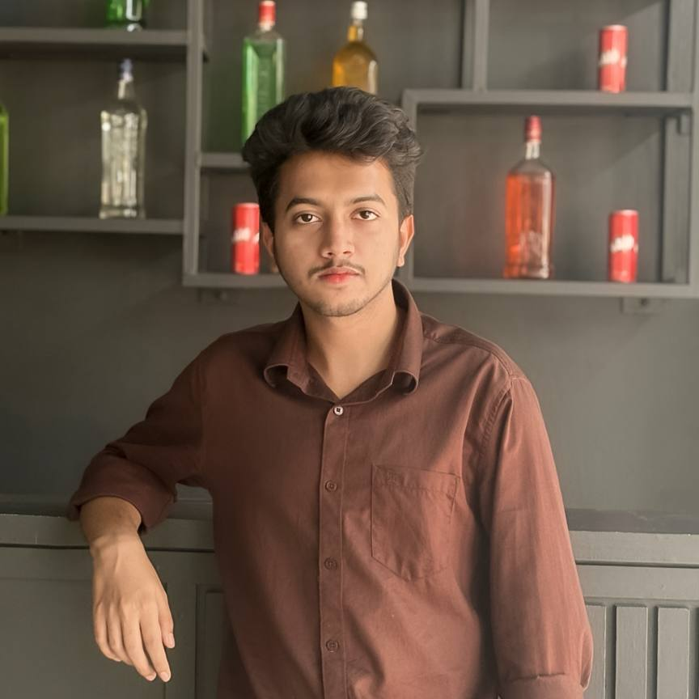

Minhajul Islam Hasib

Full Stack Web Developer
I am a hardworking and dedicated professional with experience in customer service and administrative support.
Education
- Bachelor of Science in Computer Science and Engineering (CSE)
Work Experience
Community Support & Manager
Remote
2019 – 2022
- Managed and supported online communities for various projects, particularly in the crypto and tech space
- Facilitated engagement, answered user queries, and maintained a positive and active community environment
- Helped moderate discussions and implement community guidelines across platforms like Telegram, Discord, and forums
Marketing Manager
Remote
2020 – 2022
- Developed and executed digital marketing strategies to increase project visibility and user engagement
- Coordinated social media campaigns, content creation, and promotional events
- Collaborated with influencers and community members to boost brand awareness
Graphic Designer
Crypto project
2021-2023
- Designed visual content for branding, promotions, and social media posts
- Created infographics, banners, logos, and other digital assets aligned with project branding
- Used tools like Adobe Photoshop and Illustrator to deliver professional, high-quality designs
Full Stack Web Developer (Freelance)
Remote
2024-Present
- Designed and developed full-stack web applications using HTML, CSS, JavaScript, React, Node.js, and MongoDB
- Deployed projects using GitHub
- Worked with clients to gather requirements and deliver customized solutions
Skills
- Customer service: ⭐️⭐️⭐️⭐️⭐️
- Microsoft Office Suite: ⭐️⭐️⭐️
- Graphic Designs: ⭐️⭐️⭐️⭐️
Certifications & Achievements
- Responsive Web Design Certification-Udemy
- Achieved top position in a university coding contest
- Completed freelance projects for local clients with high client satisfaction
Languages
- Bengali (Native)
- English (Intermediate/Professional)
Others